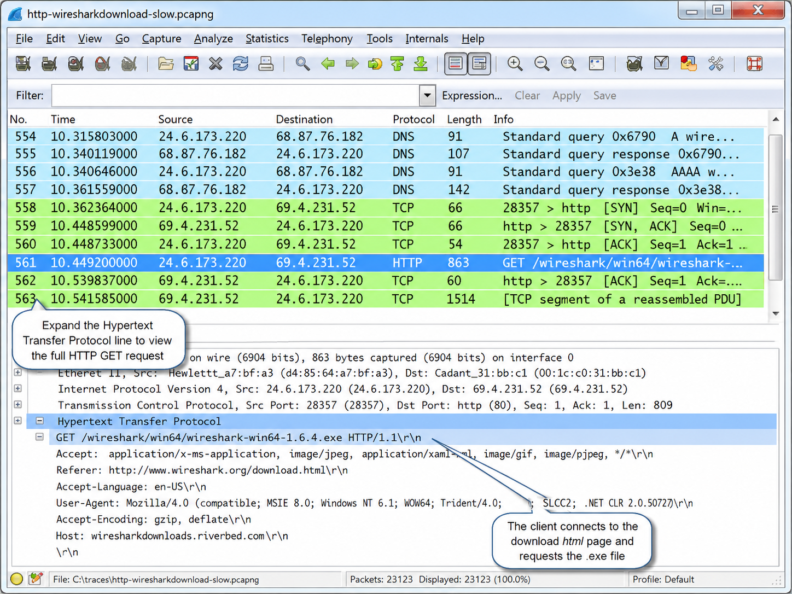
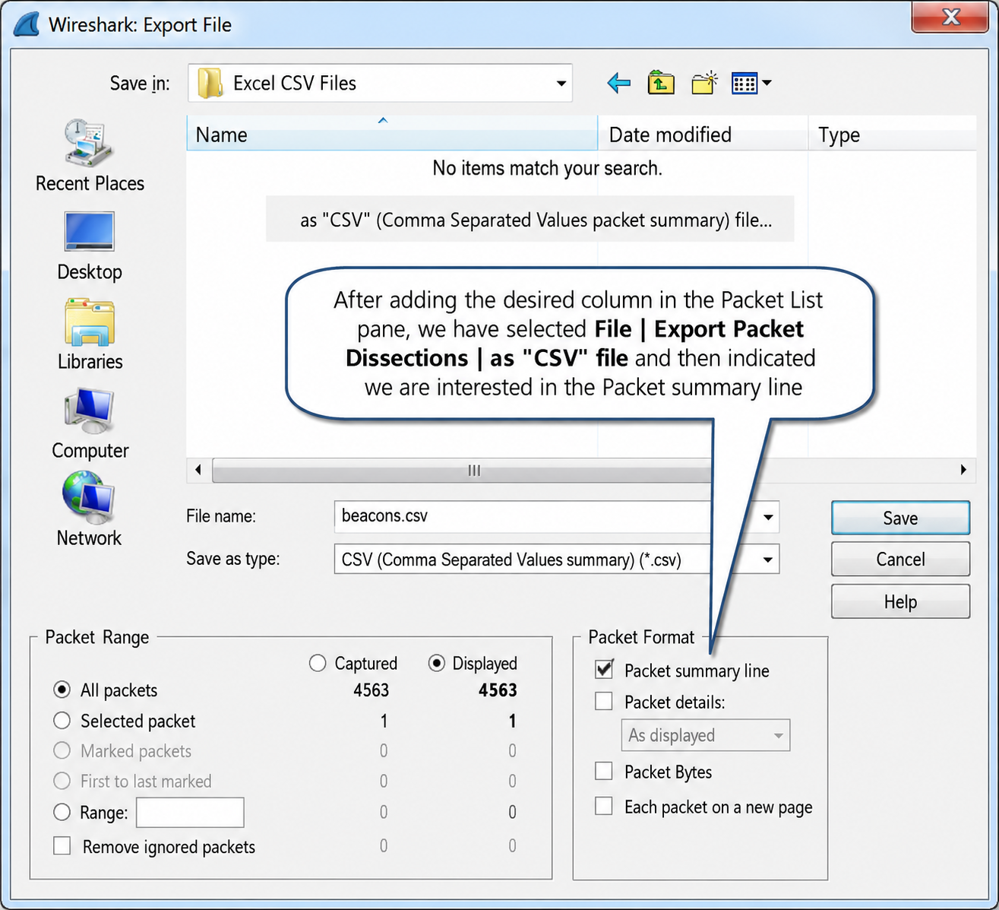
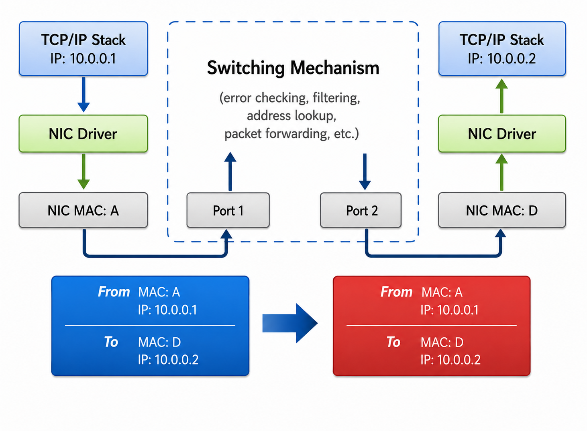
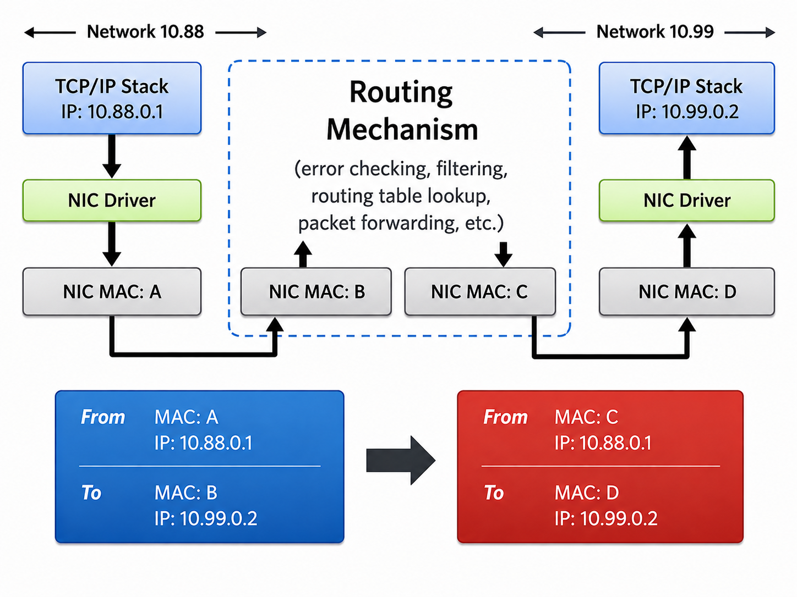
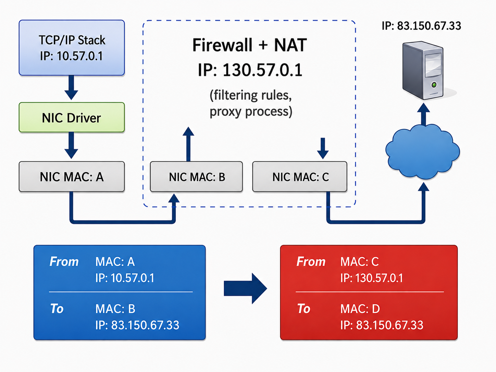
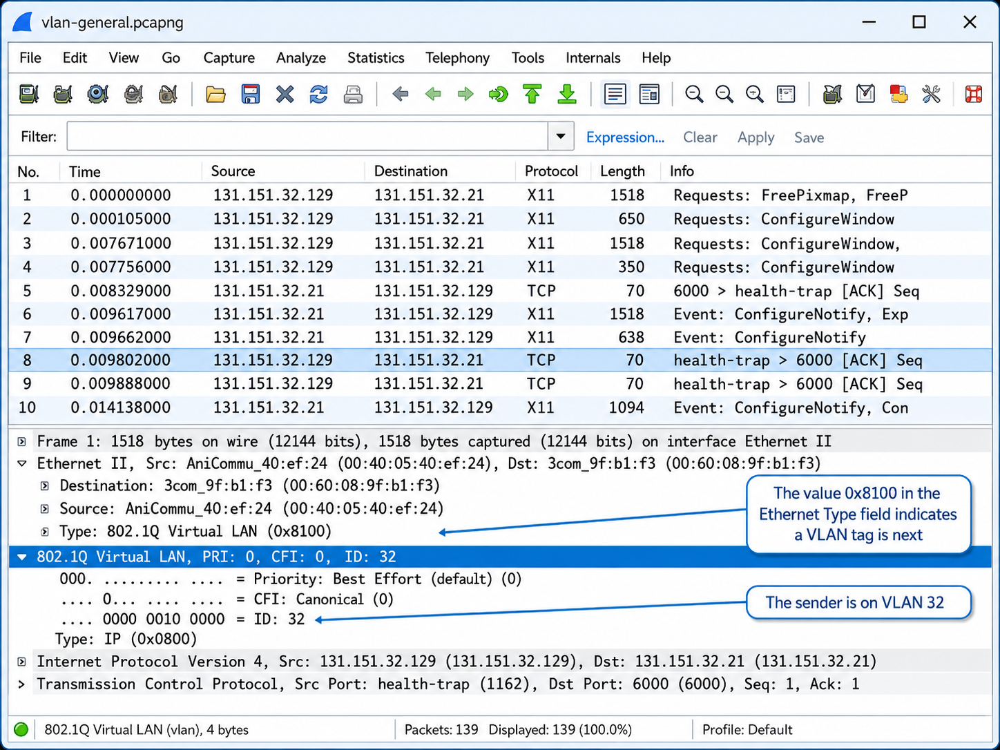

Define Network Analysis
Network analysis is the process of listening to and analyzing network traffic. It offers insight into network communications to identify performance problems, locate security breaches, analyze application behavior, and perform capacity planning. Network analysis (aka "protocol analysis") is a process used by IT professionals responsible for network performance and security.
To be a top-notch network analyst, you need three foundational skills:
- A solid understanding of TCP/IP communications
- Comfort using Wireshark
- Familiarity with packet structures and typical packet flows
Network analyzer tools are often referred to as "sniffers" and may be hardware-plus-software or software-only solutions. Wireshark is an open-source, software-only solution — the world's most popular network analyzer.
Follow an Analysis Example
A typical network analysis session includes three tasks:
- Capture packets at the appropriate location
- Apply filters to focus on traffic of interest
- Review and identify anomalies in the traffic
Consider browsing to www.wireshark.org/download.html. Here's what happens at the packet level:
- Your system performs a DNS lookup for www.wireshark.org — both A (IPv4) and AAAA (IPv6) records may be requested simultaneously on dual-stack systems.
- Your client makes a TCP connection and sends an HTTP GET request for the default page (
GET /). - The server responds with 200 OK and begins downloading the page, followed by stylesheets, images, and other resources.

When you click Download Wireshark, your browser requests /download.html and may perform another DNS query before making a TCP connection to the download server and sending a GET for the Wireshark executable.
What might you feel if there's a communications problem? You'd wait, and wait, and wait — your browser spinning without progress. With Wireshark running, you would have known long before the frustration set in exactly where the delay was occurring. The packets never lie.

Network analysis adds an indispensable tool to the network — just as an X-ray is indispensable to a hospital emergency room. We can SEE the DNS query being sent out, catch the timely response, watch the TCP connection request, and measure how long the server takes to respond.
In the world of finger pointing, it's only the network analyst's finger that counts.
Walk-Through of a Troubleshooting Session
This is based on an actual customer issue: branch office uploads to corporate headquarters took 3 minutes when healthy, but now take 10–15 minutes. Three IT staffers were assembled to assist: the infrastructure IT manager, the client IT manager, and the server IT manager.
Step 1: Plan
The team focused on the one user who complained repeatedly — "Mike." The goal: capture as close to Mike's machine as possible. No full-duplex TAP was available, so they connected Wireshark to Mike's upstream switch and used port spanning to listen in on Mike's traffic. They verified the span command worked before proceeding.
Step 2: Capture
Captured all traffic without any filter. While watching live, they noticed packets highlighted in black with red foreground — Bad TCP packets flagged by Wireshark's Expert system. After Mike completed a slow upload, they stopped capturing.
Step 3: Analyze
The team isolated the file upload conversation using Statistics > Conversations, sorted by highest byte count, and filtered on that conversation. Key findings:
- TCP RTT: 65ms — acceptable.
- IO Graph: consistently low at ~2.5 Mbps (lousy all the way through).
- Expert Info: >12% of 20,000 packets were flagged bad — over 1,000 Retransmissions and Fast Retransmissions. Hundreds of Duplicate ACKs indicated the server noticed packet loss.
- No "Previous Segment Lost" — Wireshark saw both the original and retransmission, meaning packet loss occurred after the capture point.
Step 4: Repeat
Set up capture just off the server. Critical discovery: Mike's TCP handshake did not show SACK support — instead they found "4 NOPs" (padding) in the TCP options area. A router along the path was stripping the SACK option and replacing it with padding. The server, believing Mike didn't support SACK, couldn't use selective acknowledgments for recovery — every lost packet forced a full retransmission of everything from the lost packet forward.
The culprit was a security device that performed TCP normalization as a (mis)feature. A vendor software update and reconfiguration resolved the issue.
Walk-Through of a Typical Security Scenario
A user ("SUSPECT1") complained of slow performance and an inability to shut down or hibernate their machine. One IT staffer, Colton, led the investigation.
Step 1: Plan
Colton began with proper evidence handling considerations — any findings might go to Court. He did NOT install Wireshark on SUSPECT1 to avoid contaminating the machine. Instead, he connected a full-duplex TAP to SUSPECT1 and set Wireshark to stealth mode (no IP address on the capture interface).
Step 2: Capture
Captured all traffic without filters to see everything to/from SUSPECT1. Almost immediately, Colton saw a huge number of TCP SYN packets to port 135 (NetBIOS Session Service) and port 445 (NetBIOS Directory Service), plus some ICMP traffic.
Step 3: Analyze
In the traffic, Colton saw SUSPECT1 connect to an outside server on TCP port 18067 — an unusual port. Following that TCP stream revealed recognizable IRC commands: USeR, NiCK, JOiN. These commands were altered from standard capitalization to evade case-sensitive IDS/firewall detection.
The IRC channel was being used to download a malicious application. SUSPECT1 was infected with a bot. The bot also revealed the IRC server's host name and which security vulnerability had been exploited.
Step 4: Secure
Colton isolated SUSPECT1 from the network and began cleaning the host. He blocked access to the IRC server to prevent other hosts from connecting to the C2. He monitored remaining network traffic to identify other potentially infected hosts.
Step 5: Document
Colton documented his findings and process to educate: (1) users on symptoms experienced, (2) management on future vulnerability concerns, and (3) IT staff on procedures for network cleanup.
Troubleshooting Tasks for the Network Analyst
- Locate faulty network devices
- Identify device or software misconfigurations
- Measure high delays along a path
- Locate the point of packet loss
- Identify network errors and service refusals
- Graph queuing delays
Security Tasks for the Network Analyst
- Perform intrusion detection
- Identify and define malicious traffic signatures
- Passively discover hosts, operating systems and services
- Log traffic for forensics examination
- Capture traffic as evidence
- Test firewall blocking · Validate secure login and data traversal
Optimization Tasks
- Analyzing current bandwidth usage
- Evaluating efficient use of packet sizes in data transfer applications
- Evaluating response times across a network
- Validating proper system configurations
Application Analysis Tasks
- Analyzing application bandwidth requirements
- Identifying application protocols and ports in use
- Validating secure application data traversal
Understand Security Issues Related to Network Analysis
Define Policies Regarding Network Analysis
Companies should define specific policies stating who can use a network analyzer, when, where, and how. If you are a consultant, consider adding a "Network Analysis" clause to your non-disclosure agreement.
Files Containing Network Traffic Should be Secured
Trace files (.pcap, .pcapng) contain actual packet data — including potentially confidential information. Ensure a secure storage solution for all captured traffic.
Protect Your Network against Unwanted "Sniffers"
Switches make network analysis more challenging (they only forward traffic to the intended port). However, unused switch ports in common areas should be deactivated to prevent unauthorized plugging in. The best protection is to encrypt network traffic — but note that broadcast traffic (DHCP, ARP) cannot be encrypted.
Be Aware of Legal Issues
In the U.S., Title I of the ECPA (Electronic Communications and Privacy Act) — the Wiretap Act — prohibits the intentional interception of any wire, oral, or electronic communication without authorization. In the EU, the EU Data Protection Directive (95/46/EC) applies.
Overcome the "Needle in the Haystack Issue"
Many new analysts capture thousands (or millions) of packets and face a feeling of drowning in data. Several non-pharmaceutical procedures can deal with this:
- Place the analyzer appropriately — close to the source of the problem (Ch. 3)
- Apply capture filters — reduce what you capture using BPF syntax (Ch. 4)
- Apply display filters — focus on specific conversations, connections, protocols, or applications (Ch. 9)
- Colorize traffic — use color rules to spot anomalies at a glance (Ch. 6)
- Reassemble streams — see the data exchanged rather than individual packets (Ch. 10)
- Save subsets — export only the relevant portions to a new file (Ch. 12)
- Build graphs — use IO graphs or conversation statistics to depict overall traffic patterns (Ch. 8 & 21)

Review a Checklist of Analysis Tasks
Analysis tasks can be proactive (before problems occur) or reactive (after a complaint). Proactive analysis is more valuable — reactive is more common.
Sample analysis tasks achievable with Wireshark:
- Find the top talkers on the network
- Identify protocols and applications in use
- Determine average packets per second and bytes per second
- Spot delays between client requests due to slow processing
- Locate misconfigured hosts
- Detect network or host congestion slowing file transfers
- Identify asynchronous traffic prioritization
- Quickly identify HTTP error responses (client and server problems)
- Graph HTTP flows to examine website referral rates
- Identify unusual scanning traffic on the network
- Play back VoIP conversations to hear quality effects of network problems
- Identify average and unacceptable service response times (SRT)
- Spot unusual protocols and unrecognized port number usage
Networks vary greatly. The number and type of analysis tasks depends on your network's traffic characteristics.
Understand Network Traffic Flows
Switching Overview
Switches are Layer 2 devices that forward packets based on the destination MAC address. They do not change the MAC or IP addresses. If the destination MAC is unknown, the switch floods the packet out all ports. Broadcasts and multicasts are also forwarded out all ports (unless IGMP snooping is configured).

Routing Overview
Routers are Layer 3 devices that forward packets based on the destination IP address. At each hop, the router:
- Verifies the checksum (bad checksum = packet dropped)
- Strips the incoming MAC header (Ethernet)
- Checks the IP TTL (TTL=1 → discard + send ICMP Time Exceeded)
- Decrements the TTL by 1
- Looks up the destination network in its routing table
- Creates a new MAC header pointing to the next hop
- Forwards the packet
The source and destination IP addresses never change as a packet traverses routers (unless NAT is applied).

Proxy, Firewall and NAT/PAT Overview
Firewalls allow or deny traffic based on rules. Basic firewalls operate at Layer 3. NAT systems alter IP addresses — hiding the client's private IP. PAT systems also alter port information to demultiplex multiple internal connections through a single outbound IP. On either side of a NAT device, the IP addresses you see will not match — you must look past the IP header to correlate flows.
Proxy servers create two separate TCP connections — client connects to proxy, proxy connects to target. Two totally separate conversations exist in the packet capture.

Other Technologies that Affect Packets
VLANs (802.1Q) add a 4-byte tag to Ethernet frames to create virtual networks on a single physical switch. The tag is inserted between the source MAC and the EtherType field. Wireshark decodes VLAN tags and displays the VLAN ID.
MPLS prepends a special label header to packets, forwarding based on the label rather than IP routing table lookups. The label is stripped when the packet exits the MPLS network.
WAN optimization devices (like Riverbed Steelhead) compress traffic, cache content locally, and alter TCP behavior — which can confuse analysis. Always capture before and after such devices to see what they're changing.

Launch an Analysis Session
You can start capturing and analyzing traffic right now. Follow these steps to get a feel for analyzing traffic on a wired network:
Install Wireshark (latest stable release from wireshark.org/download.html).
Launch Wireshark. Click on your wired network adapter in the Interface List on the Start Page, then click Start.
Clear your browser cache AND DNS cache before this step. Then, while Wireshark is capturing, launch your browser and visit a website (e.g., www.chappellu.com).
Select Capture | Stop or click the Stop Capture button.
Look through the captured traffic. You should see: ARP (if the DNS server wasn't in your ARP cache), DNS query/response (A and AAAA records on dual-stack systems), TCP handshake (SYN, SYN-ACK, ACK), and HTTP GET request for the main page.
Select File | Save and create a \mytraces directory. Save using the .pcapng format.

Case Studies
Our school district comprises 24 buildings and roughly 50 VLANs. Generally speaking, each campus has one VLAN for data and one for voice. We operate in a NetWare environment with at least one NetWare server at each campus. Each campus links back to an aggregate location before being sent on to the router — what some call "Router on a Stick."
I use Wireshark regularly to monitor traffic patterns and remove unnecessary traffic from the VLANs I manage. Two types of traffic I've eliminated: NetBIOS and SMB. Since we use NetWare's NDPS for printing, we don't need Windows File and Printer Sharing. I recently sampled four other VLANs (out of my control) using a five-minute PCAP. After capture, I sifted through traffic using filters to determine what percentage was NetBIOS and SMB:
- 50,898 packets → 1,321 packets (2.5%) NetBIOS/SMB
- 175,824 packets → 16,480 packets (9%) NetBIOS/SMB
- 295,911 packets → 14,102 packets (5%) NetBIOS/SMB
- 115,814 packets → 333 packets (<1%) NetBIOS/SMB
Although the results were lower than I expected, trimming what I did find could still be beneficial to switch/router processing and — most of all — security. I have also used Wireshark to track down and remove other unnecessary protocols like SNMP and SSDP.

One customer's network consisted of 22 buildings in a campus-style setting. Management complained that the network was slow at times and asked a consultant to come on-site to determine the cause of poor network performance.
Upon arrival, I was asked to sign a legal document stating that I would not listen to the network traffic to isolate the problem — (you, as I do, must question why they called me).
Management was concerned that confidential data may traverse their network in unencrypted form. They were ignoring the fact that there are many ways for someone to tap into their network. If their data is visible to a network analyst, it would be best to verify that and fix the problem — not just assume that no one is listening.
It took several meetings with various individuals to convince management that they were a bit "off" on their thinking.
Once I began listening to their network traffic, it became evident that they had good reason to be concerned. Their Lotus Notes implementation was misconfigured — all emails traveled through the network in clear text. Over the next few hours of listening we found several applications that sent sensitive data across the network in clear text. By the time I left, they had a list of security enhancements to implement.

TL;DR — Chapter Summary
The World of Network Analysis
Network analysis offers an insight into network communications. When performance problems plague the network, guesswork can often be time-consuming and lead to inaccurate conclusions — costing you and your company time and money. A full understanding of the network traffic flows is necessary to (a) place the analyzer properly on the network and (b) identify possible causes of network problems.
At this point it is recommended that you follow the procedures listed in Launch an Analysis Session and review the section entitled Follow an Analysis Example.
Review Questions
Write your answer before the model answer unlocks. Use the Hint button for a nudge in the right direction.